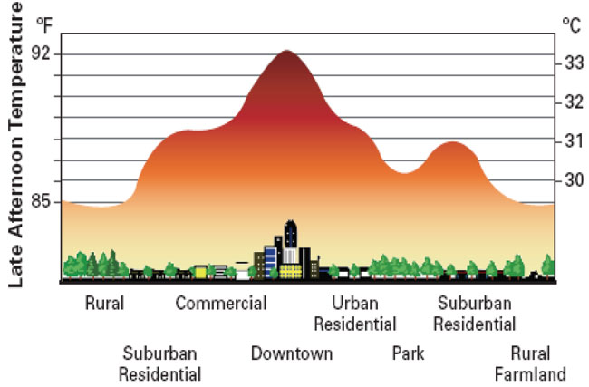

I’d like to share something. I’ll try to be concise, which is a massive challenge for me. My two passions are the environment and education. We can’t live without the former, and we can’t save the planet (or ourselves) without vastly improving the latter. Our current economic, governance and political systems are not geared towards saving the environment or improving education except in the very specific ways in which it benefits businesses, often at the expense of the students, yet we keep voting the same people into office again and again, often with a choice of just 1 or 2 candidates from the same two parties that don’t really have our backs.

Climate Change Disinformation
For decades now, special interest groups, foundations, lobbyists, and ultra-rich individuals have worked to undermine the results of the scientific community by spreading false information about those results, to the point that people actually still question. There is no need for the question “Is it real?” - anthropomorphic climate change is undeniably real despite the dark money thrown at it to pull the plug on efforts to fix the environment - there are only questions like: “How much influence do our actions have on it?” and “What will be the most effective ways to turn the situation around?”
Greenhouse Gases
Don’t just talk about CO2 - it’s only a portion of the problem, along with methane (CH4), nitrous oxide (N2O) and water vapor. Together, the greenhouse gases we produce have continued to increase (but, perhaps NOT strangely, consumption of carbonated beverages hasn’t, and solutions haven’t been implemented in an effective, widespread way) in volume have caused the size and temperature of the band of heat across the globe to increase in size, which is altering not just weather patterns but also altering regional climates and the oceans, too. This almost entirely singular focus on climate change by CO2 isn’t helping - it has become an excuse.
Coral Reefs
I’ve had the fortune to do a bit of scuba diving and seen both dead and living coral reefs. This video will take you there and show you the wonder, and the sheer tragedy, that is unfolding, largely unknown, and has a major impact on not just the coral but all the creatures that depend on that ecosystem. Within the past several years, coral bleaching events have increased in frequency and scope, resulting in at least 50% of the coral reefs dying worldwide. Most of the Great Barrier Reef is now dead. That may not sound important, but you have to understand that reefs form the structure of complex ecosystems that, when the coral is dead, collapse. This means natural breakwaters fall apart, allowing your coastline to eventually be destroyed by the rough sea the reef used to protect you from, as well as the damage to adjacent ecosystems, and then there’s the risk of land inundation by those big waves. There’s also the fact that some fishing and pet animal industries rely on the reefs for what LIVES in the reefs, including selling corals, sponges and gorgons. Coral reefs also serve a function in sequestering carbon dioxide and producing oxygen, while simultaneously suppressing algae growth by eating it.
The Big Challenges
These are my “big issues.”
- I don’t see any real effort to decrease greenhouse gas emissions, and politicians at the highest levels are free to refuse to cooperate, like Trump did, even rolling back initiatives by previous president and pulling out of climate accords.
- Deforestation deprives animals of homes, humans of new medicines, the world of oxygen and biodiversity, and other benefits, including protection from desertification (before which is the loss of the topsoil by sterilization and/or erosion) and the production of localized fog/precipitation.
- Oceanic degradation, including:
- rising temperatures resulting in coral bleaching, deprive animals of homes, humans of new medicines, the world of oxygen, and other benefits;
- the decrease in the availability of plankton and other creatures (like coral) that convert far more CO2 to oxygen than do plants;
- run-off into the oceans and seas, primarily from deforestation and agriculture, is creating huge dead zones where dangerous algal and jellyfish blooms are replacing the once verdant array of ecosystems;
- overfishing is causing the populations of fish, sharks, cetaceans, and turtles to be in great danger of collapse, if not extinction;
- dredging destroys seabed ecosystems;
- pollution (including plastics) and excessive land erosion kills off marine life, among other things;
- land and coastal waters repurposing engineers and destroys valuable things like deltas, marshes, coral reefs, beds of kelp, fish and shellfish, and swamps into usable land while depriving the ecosystem of not just flora and fauna but a living “organ” that serves a vital function for the health of both the land and water in that area, while also impacting the people who rely most on those ecosystems being healthy; etc.
- Pollution (air, land, water, biological, radioactive, light, sound, etc.) contributes to a whole host of problems, including:
- constant exposure to contaminants, especially through food, the air, and water;
- deforestation and ocean degradation, as well as the loss of living creatures and even entire species (especially if it exists in only one area);
- decreased nutrition requiring more consumption; poorer sleeping patterns;
- decreased crop yields;
- decreased availability of clean water, land and air;
- health issues like mutations, declining birth rates, increasing mortality, increases in asthma, allergies in general and to foods in specific; and more.
- Food and food systems
- are highly driven by profit, with fewer and fewer small farms and ranches and lots of massive, industrial companies taking everything to a higher level to increase production while squeezing the actual; producers on price;
- create a lot of waste (some countries waste in excess of half of all its food);
- require a lot of resources, especially when we talk about animal products;
- pollute (runoff, pesticides, herbicides, fungicides, noise, light, air, water and land);
- potentially cause negative changes to a food source (via GMO)
- damage health (diabetes, strokes, heart disease, hypertension and others are amongst the top killers, as well as food allergies, asthmatic reactions to pesticides, etc.);
- create insecurity and stress (food deserts, lack of income to buy good food - “one little apple or one big bag of chips?”, lack of healthful choices, etc.);
- preference of flavor over healthfulness, environmental degradation, ecosystems destruction, climatic changes, etc.
- Climatic changes that include:
- shifting weather patterns and even seasons;
- unreliable rainfall (increase, decrease or shift);
- higher local temperatures (urban heat islands resulting in more usage of energy to stay cool);
 - increases in dangerous weather patterns;
- changes in global air and water currents; etc.
- Education continues to inadequately impress upon the youth of the world the importance of a healthy planet and, thus, a healthy local ecosystem. Cultures resist changes of bad habits (such as pooing and peeing in fish ponds or near clean water sources), giving the ages-old "It’s what we’ve always done. We’re fine. There’s nothing to change here and it’s odd, besides, to do it differently! This is only one aspect of what’s wrong with education, which would require a lot more writing.
- Economics focused solely on the profit margin is increasingly driving businesses and countries in the direction that is OPPOSITE that which is necessary for long-term survival. Hyper-competition for market share, domination, and larger profits for companies and their investors throw not just employees under the bus, but also entire societies; mental and physical health; social structures that create a cohesive, supportive community; ecosystems; and, sometimes, countries, among others. In addition, this is pushing us more and more into the dystopian future of businesses overwhelming most (or all) governments. The economic demand for constant growth (the WTO’s policies) will make the planet’s death happen faster.


It is not enough to talk about CO2 trading, which largely benefits those who use it as a commodity to get rich. It is not enough, even, to talk about greenhouse gases. We must also make substantive and immediate changes to the way we make decisions and live. Too much freedom has major negative consequences and too few people understand, are educated enough to sort through all the lies to find the truth, and are ABLE financially to make a difference. This means that financial safety is important so that people can focus more on how to preserve the planet that we all depend on.
We influence the environment AND climate because of the massive scale on which we work. Physics and maths both stand behind the idea that anthropomorphic climate change is real. If you’re trapped in an elevator for long enough, you’ll notice a change. Go to an expo when it’s empty and icy-cold because the ACs are running in the summertime, then see how hot it becomes when the expo is jam-packed. Pee in your swimming pool and you’ll feel a difference, too! 
We are the problem. In the past 13 years since Gore put out his hyperfocused but very awakening video, the changes we’ve made have mostly been superficial.
- Renewable energies cannot replace coal and gas, except nuclear. They are simply too costly and break down too quickly to be viable, plus most only work in certain areas.
- Solar only works where there’s enough light each day, which is to say the part of the Earth that is near the Arctic and Antarctic have a negative energy production rate compared to those near the equator.
- Wind only works where there is sufficient wind and many people don’t like to see them, so they have to be isolated but, preferably, not where birds migrate.
- Hydro only works where there is a flow or tide, and damming causes a lot of ecological problems (see the loss of several species of salmon in the US as an example).
- Major human sources of greenhouse gases have not been abated.
- Deforestation in major rainforests from Brazil to Indonesia has gotten worse.
- Plastic islands in the oceans, coastal dead zones, species loss are all getting worse
Before I spend the next hour making a super-long list, I’d better stop myself! 
We need smaller populations with stable economies, not larger ones economists insist on for economic growth. It is lunacy to think that the policies of the World Trade Organization (the WHO) will benefit the masses or the planet. The SARS-CoV-2 pandemic (it is NOT a CoViD-19 pandemic, that’s just the disease) has amply demonstrated how places are too dependent on tourism, the hospitality industry, and certain other industries to be sustainable in a crisis.
I suggest that the changes need to be social, environmental, economic and political (both governing systems and political ones), and the fastest way to make changes to those is through the global renovation of education. Would it sound right if I suggest that each of those 5 spheres will need their own think tanks and scientific/expert communities run on merit and kindness instead of diplomacy, connected with the overall goal of improving the future of humanity and the planet, by finding the best solutions for the problems, now and in the future, and then using education and media to broadcast it throughout the world?
I am very open to feedback because I have huge blind spots.